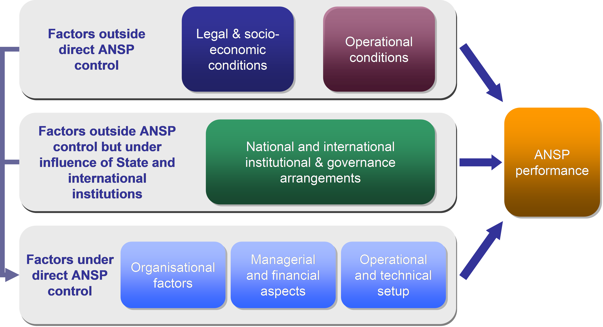
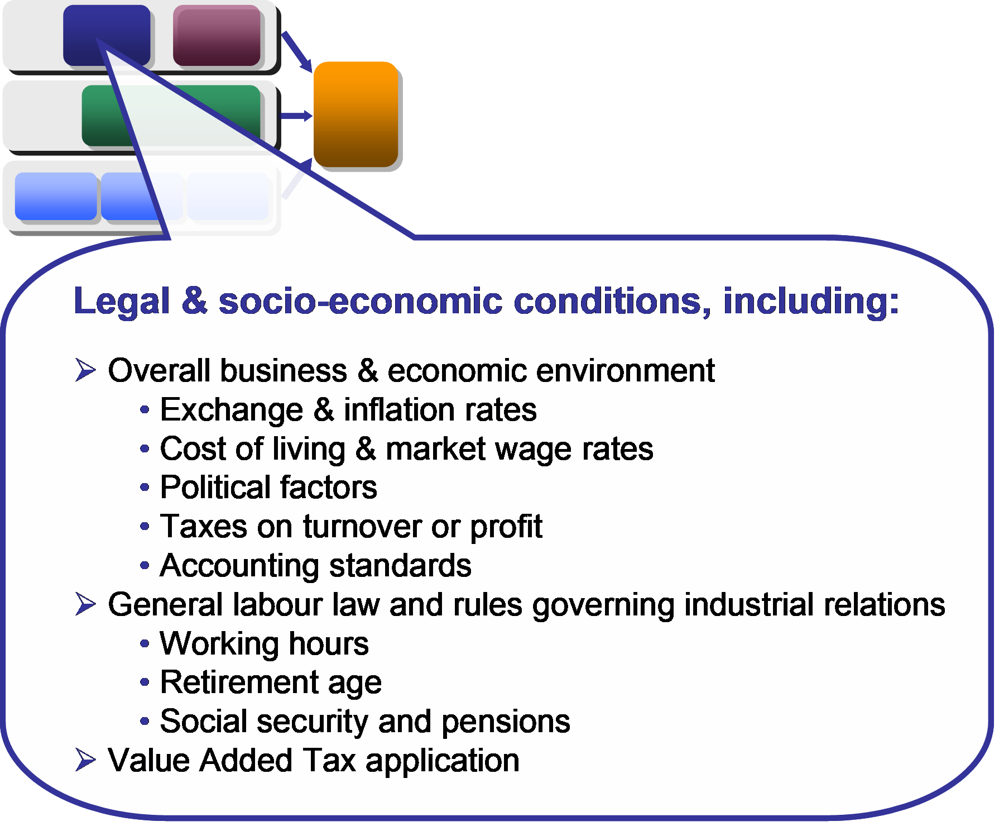
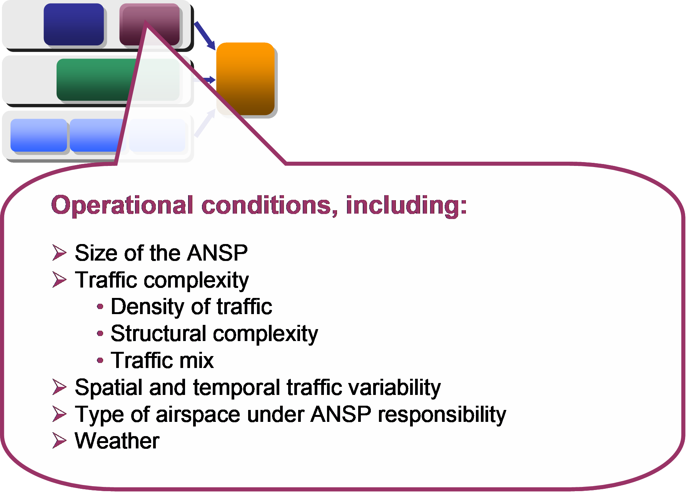
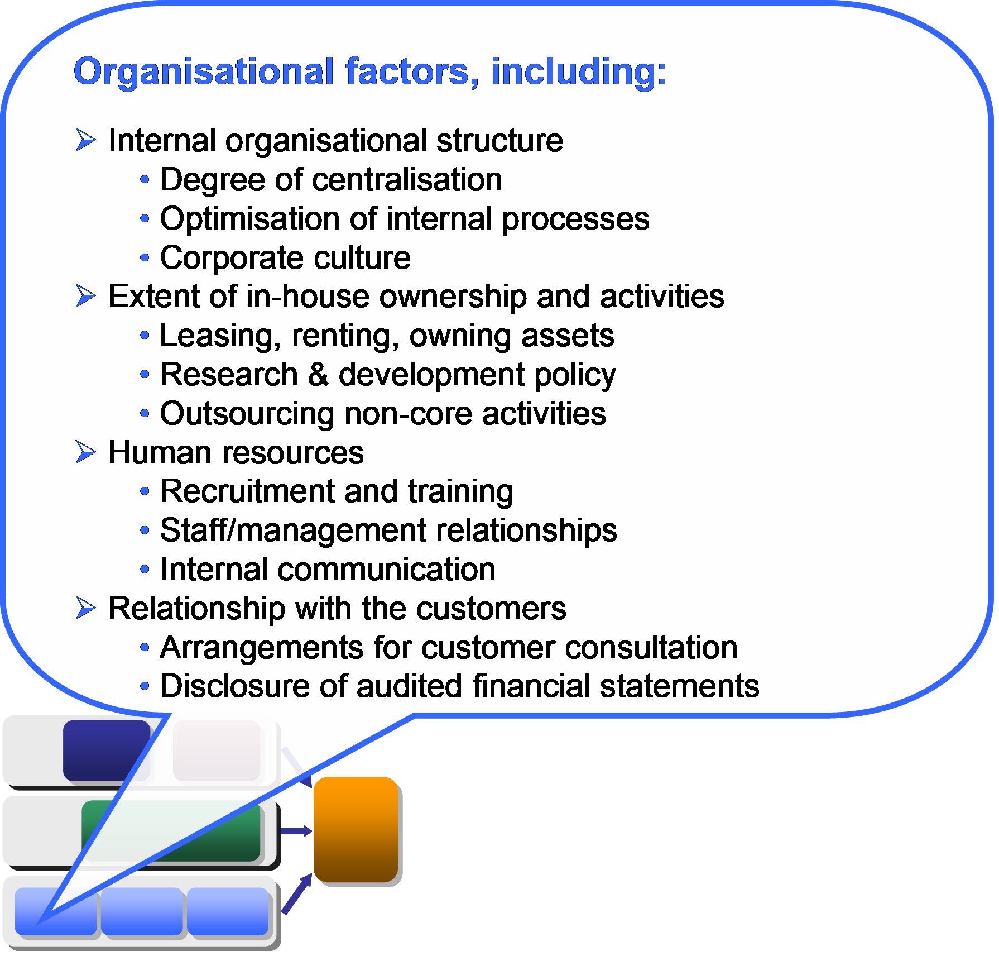
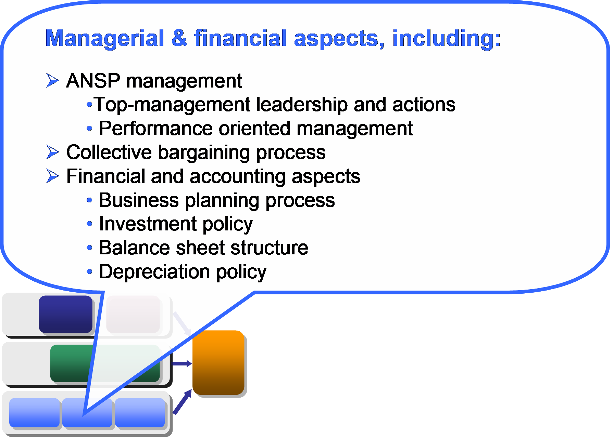
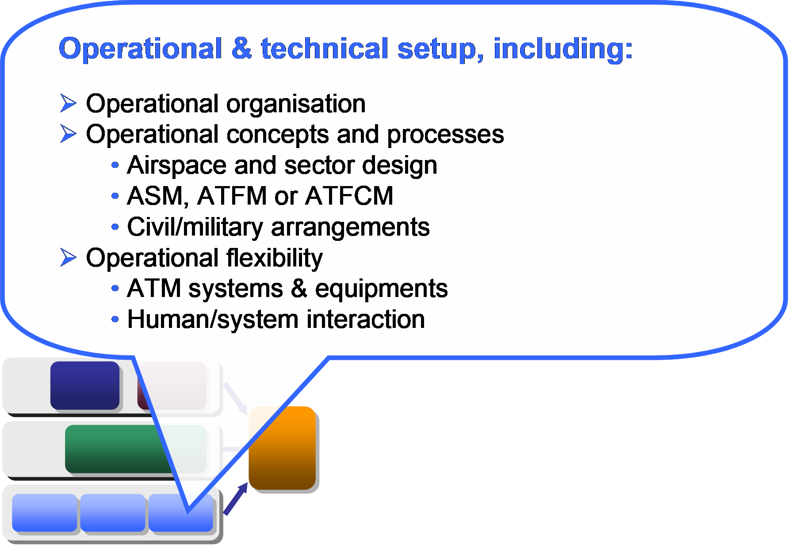

5 Factors affecting performance
5.1 Introduction
The ACE benchmarking analysis has the objective of comparing ATM cost-effectiveness performance across a wide range of ANSPs. The major focus of the ACE report is to examine and analyse the quantitative facts about the observed cost-effectiveness performance of the ANSPs. This factual analysis provides a comprehensive description and comparison of performance as viewed by the users of ATM/CNS services.
However, such a factual analysis cannot be either a complete explanation of performance differences between ANSPs, or an exhaustive guide on how performance can be improved, without some complementary consideration of how differences in performance arose.
The framework illustrated in Figure 5.1 below shows exogenous (outside the control of ANSPs) and endogenous (under ANSPs’ control) factors which influence ANSP performance.

5.2 Exogenous factors
Exogenous factors arise from the basic conditions in which an ANSP operates, which can differ from one country to another. Exogenous factors are likely to influence the way ANSPs organise and conduct their business. In some cases they may also affect the way an ANSP manages costs and determines the level of charges.
Exogenous factors cover a spectrum of observability and measurability. At one extreme, the impact of irrecoverable VAT on inputs, which differs from state to state, is readily quantified. It has a direct impact on apparent performance which can be perfectly adjusted for. At an intermediate level there are factors for which it is possible to derive metrics (examples are traffic complexity, market wage rates, and exchange rate volatility), but it is difficult to specify exactly how such factors might affect performance. Even more difficult to take into account are factors such as political influence (and interference) on ANS provision. Finally, there will inevitably be exogenous factors that are simply impossible to identify, although they are no less real than the other factors discussed.
In Figure 5.1, exogenous factors that could have an impact on performance have been classified into two main areas (top and central set of factors in Figure 5.1), according to which set of decision-makers have an influence over them. The top set, comprising legal and socio-economic conditions, and operational conditions, are affected by decision makers and conditions outside aviation policy-making. The central set, comprising institutional and governance arrangements, are exogenous to the ANSP but are influenced by aviation sector policy decisions.
Exogenous factors need, as far as possible to be taken into account both in achieving fair benchmarking, and in effective target setting:
Local differences in exogenous factors can either create a direct advantage or a direct burden on performance;
Local institutional and governance arrangements may have been set with the specific purpose of creating incentives to follow performance-driven strategies.
Capturing the local impact of an exogenous factor on ANSPs performance is not a straightforward exercise. First, there is no guarantee that a given exogenous factor will affect all ANSPs in the same manner. It is possible that similar conditions could create effects working in opposite direction (bringing both benefits and difficulties). Second, similar exogenous factors may not necessarily affect different ANSPs to the same degree, either because of endogenous factors relating to how an issue is managed, or by other exogenous factors constraining an ANSP’s response. So a given factor might create a small burden in one ANSP, while affecting another more seriously.
The legal and socio-economic conditions prevailing in individual countries are affected by national policy-makers at a more general level (for example taxation policy), or by national and international macro-economic conditions. Major examples include the prevailing national wage rates, and levels and systems of taxation.

Some examples that affect ATM cost-effectiveness performance are illustrated in Figure 5.2.
The operational conditions, such as the traffic patterns the ANSP has to deal with, are determined by decisions made by airports, airlines, and especially, flying travellers.

Operational conditions include a number of factors, summarised in Figure 5.3.
Operational conditions undoubtedly have a direct impact on cost-effectiveness performance, although the extent and magnitude of the impact is not straightforward to isolate.
The institutional and governance arrangements for ANS in a particular country are set in place by the policies and specific aviation laws of each country. These factors are exogenous to the ANSP but decision-making concerning some of them is largely driven by national aviation policy-makers. Some of these factors relate to international requirements such as those imposed by ICAO, EUROCONTROL and the Single European Sky. These policies at State and European level are subject to changes given strategic objectives for the sector.
Figure 5.4 provides a list of such factors, relating to:
- the way ANS is regulated;
- the institutional structure surrounding ANS, the ANSP ownership and control structure; and
- the civil/military arrangements.
It is generally considered that institutional and governance arrangements will not affect ATM cost-effectiveness directly; rather they act as influences or constraints affecting endogenous factors (such as the overall business objectives, the internal organisation, and the operational setup between civil and military).
5.3 Endogenous factors
In principle, once the impact of all exogenous factors has been allowed for, the performance differences that remain should comprise residual inefficiency which lowers performance below that obtained by best practice. Such residual inefficiency arises from a number of endogenous factors, under the direct control of ANSPs.
A better understanding of the endogenous factors would enable some progress in the analysis of benchmarking results, in the identification of best practices, and in the process of target setting.
Endogenous factors – the way that an ANSP manages its business to optimise performance – are influenced by exogenous factors. “Best practice” in any given area will depend on the exogenous circumstances. ANSPs can take action to fully exploit the benefit of their environment or to minimize the impact of relative disadvantages. Therefore, the impact of an exogenous factor should not be analysed in isolation from an analysis of the degree to which this impact has been minimised or maximized through appropriate internal measures.
Different data and methodologies from those currently used in the ACE Benchmarking Report would be required to investigate endogenous factors in more depth. Clearly, it is the responsibility of the ANSP to determine how best to respond to the local conditions.
Endogenous factors fall into three groups:
- organisational factors;
- managerial and financial aspects; and,
- operational and technical setup.
Figure 5.5 lists the factors that would need to be considered in the scope of a comprehensive analysis of the impact of ANSP organisation on performance. They mainly relate to four issues which are typically addressed in the Balanced Scorecard methodology. These issues are:
- The internal organisation structure;
- The degree to which assets and activities are retained in-house;
- Human resources; and
- Relationship with customer.

Not all organisational factors will directly affect cost-effectiveness; some enable or facilitate the achievement of performance when they are set in conformity with the business objectives. It is likely that no single model should constitute “best practice” in all circumstances.
Figure 5.6 provides a list of factors that would need to be considered in the scope of a comprehensive examination of the influence of ANSP managerial and financial arrangements on performance. They mainly relate to the following three issues:
- The quality of management;
- The collective bargaining process; and
- Financial and accounting considerations.

Most of the managerial and financial aspects are expected to directly affect cost-effectiveness, since they have an impact, for example, on investment decisions, productivity and wage policies. The managerial and financial aspects are to some extent influenced by the ANSP organisational factors and by some of the exogenous factors (especially among the institutional and governance factors, and among the socio-economic factors).
Figure 5.7 provides a list of factors that would need to be considered in a comprehensive examination of the influence of ANSP operational and technical setup on performance. They mainly relate to the following three issues:
- Operational structure;
- Operational concepts and processes; and
- Operational flexibility.

The operational and technical setup of an ANSP is expected to be influenced by both exogenous factors (typically the operational environment) and other endogenous factors (such as internal organisation and investment policy). The operational and technical setup is expected to affect both labour and capital productivity and the level of support costs.